Kéz- és lábápolás · időpontra
Az ápoltság a részleteknél kezdődik.
Személyre szabott kéz- és lábápolás, ahol a szépség és a nyugalom találkozik.
- Telefon
- +36 70 614 6070
- Időpont
- Előre egyeztetve
- Helyszín
- Budapest XI. Egyeztetés alatt
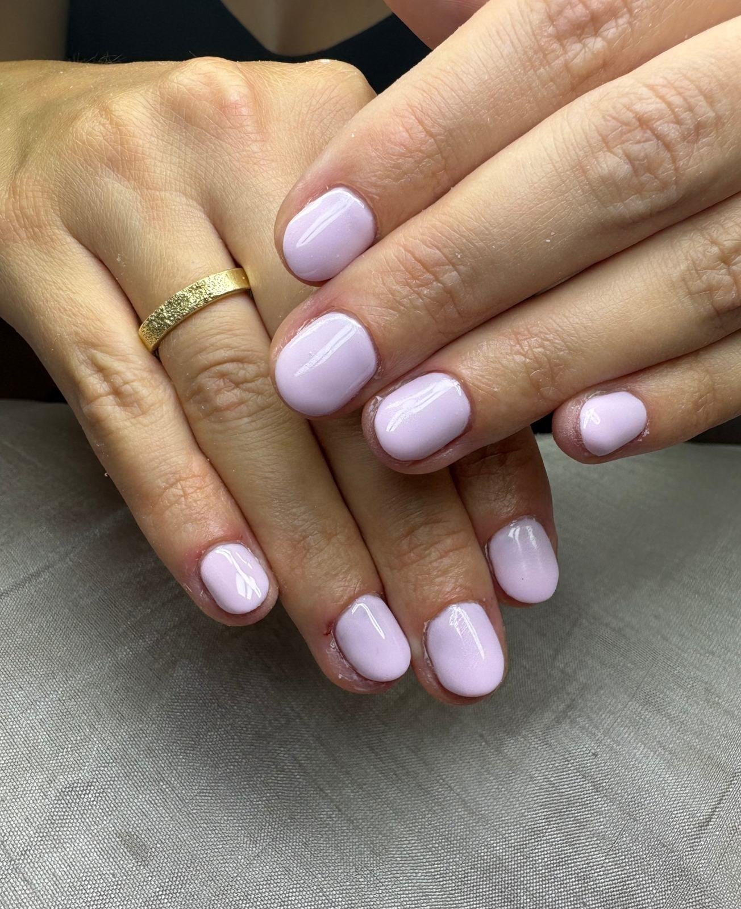
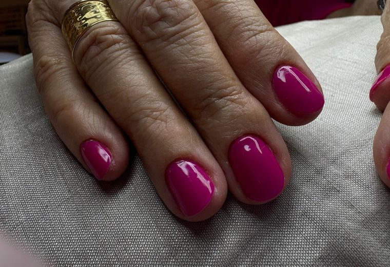
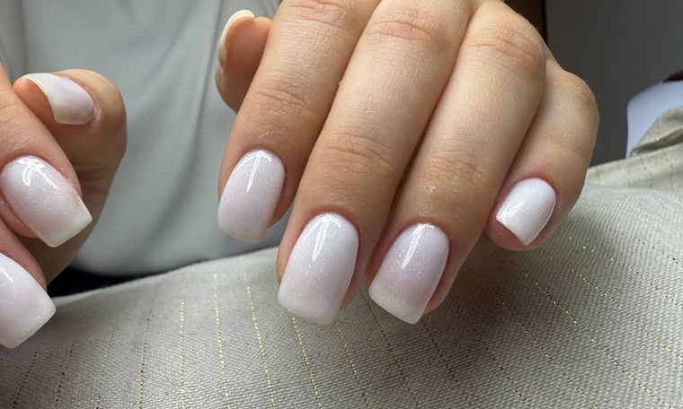
Beatrix saját munkái
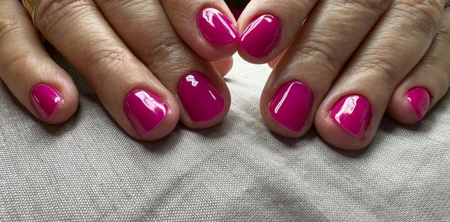
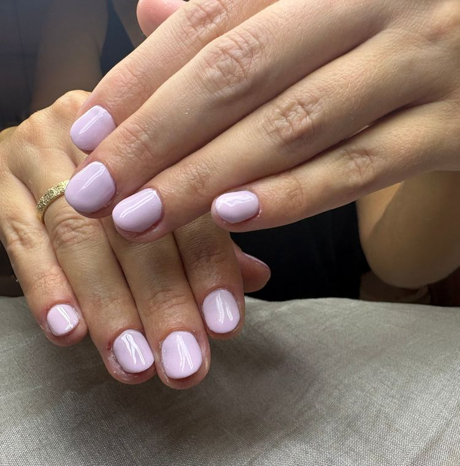
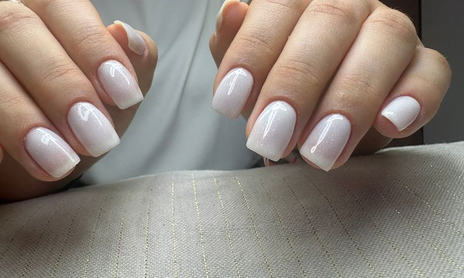
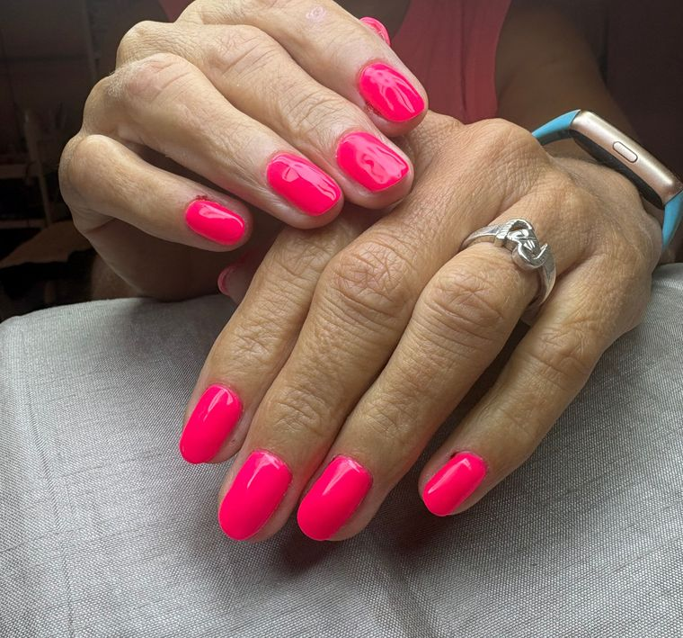
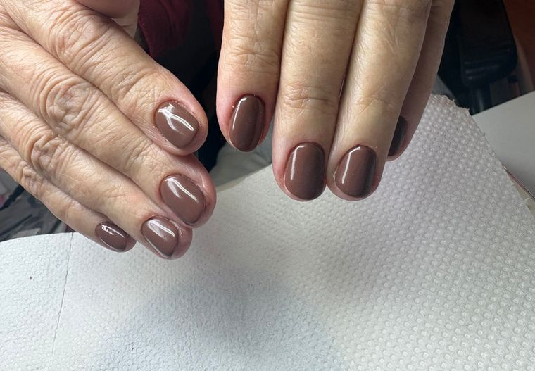
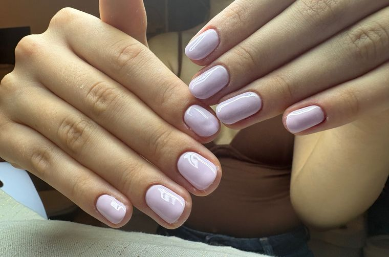
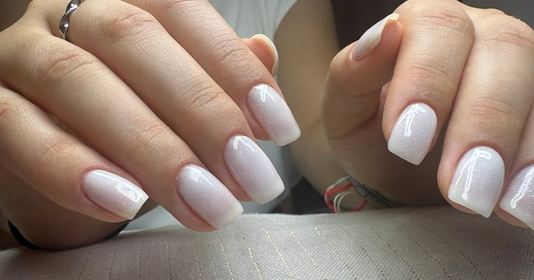
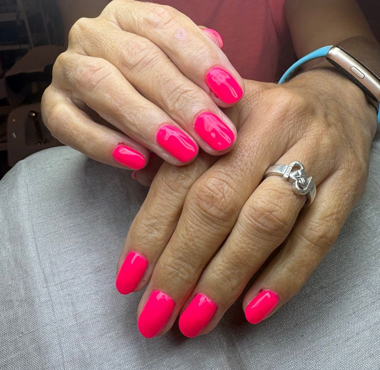
Beatrix saját munkái — mind a szalonban készültGaléria
Nyugodt, személyes alkalom
A kezelés a te időpontod: kapkodás nélkül, a részletekre figyelve.
Higiénikus kezelés
Tiszta, rendezett munkakörnyezet és gondosan előkészített eszközök.
Nőknek és férfiaknak
Az igényes lábápolás mindenkinek jár — férfi vendégeket is szívesen várok.
Kezelések
Lábtól a kézig, gondosan.
A hangsúly a lábápoláson van, a klasszikus pedikűrtől a lábgéllakkig. Mellette kézápolás és géllakk — egyéni igényekre pedig előzetes telefonos egyeztetés.
Árak és időtartamok
Árlista
Az óralap minden kezelésnél a hosszt mutatja — így könnyebb beosztani a napod. Bármelyik sorból egy kattintással foglalhatsz.
Beatrix árlistája Az árak Beatrix saját árlistájáról valók. Ahol az árlistán nincs időtartam, ott a percek becsült értékek, a véglegesítésig egyeztetendők.
Ide Beatrix saját portréja kerül, a szalonban, természetes fényben.
Rólam
Balogh Beatrix
„Nálam a kezelés nem rohanás: időt szánok rá, hogy minden részlet a helyére kerüljön.”
A szalonomban nyugodt, személyes légkörben dolgozom. Fontos számomra a gondos, igényes munka és a higiénikus környezet — hogy a kezelés alatt valóban kikapcsolhass. Lábápolásra nőket és férfiakat egyaránt szívesen várok.
- Esztétikai és wellness pedikűr
- Lábgéllakk, talpmasszázs
- Orosz gépi manikűr, erősített géllakk
- Műköröm szalonformába
Beatrix
Jóváhagyandó bemutatkozó szöveg
A szalonban
Amire számíthatsz.
Nem ígéretek, hanem a szalon alapelvei — a végleges megfogalmazást Beatrix-szel véglegesítjük.
Személyes figyelem
Egyeztetett időpontra érkezel, a kezelés pedig a te tempódhoz igazodik.
Higiénikus munka
Rendezett, tiszta munkakörnyezet és gondosan előkészített eszközök minden vendég előtt.
Részletei egyeztetendők
Kényelmes foglalás
Online pár lépésben, regisztráció nélkül — vagy telefonon, ahogy neked egyszerűbb.
Galéria
Munkáim
Beatrix saját munkái. Koppints egy képre a nagyításhoz — lapozni nyilakkal vagy húzással lehet.
Gyakori kérdések
Mielőtt foglalsz.
Ahol a válasz még Beatrix döntésére vár, ott jelöltük.
01Hogyan foglalhatok időpontot?
Az oldalon pár lépésben: kiválasztod a kezelést, a napot és a szabad időpontot, majd megadod a neved, e-mail-címed és telefonszámod. Regisztráció nem kell. Ha inkább beszélnél, hívj a +36 70 614 6070 számon.
Ez a bemutató változat valódi időpontot nem rögzít.
02Milyen pedikűrkezelést válasszak?
Klasszikus pedikűr (80 perc): alapos láb- és körömápolás. Vizes pedikűr géllakkozással (100 perc): áztatással induló teljes kezelés, tartós színnel. Ha csak a régi lakkot vinnéd le egy frissítő ápolással, a lábgéllakk eltávolítás + mini pedikűr (90 perc) a jó választás. Bizonytalan vagy? Hívj, és együtt kiválasztjuk.
03Mi történik, ha módosítanám a foglalásomat?
A tervezett rendszerben a visszaigazoló e-mailben egyedi link lesz, amellyel a foglalást módosíthatod vagy lemondhatod — belépés nélkül. Telefonon is szólhatsz.
Megerősítendő A lemondási határidőt és a késésre vonatkozó szabályt Beatrix-szel még egyeztetjük.
04Férfiak is foglalhatnak?
Igen. A lábápolás nőknek és férfiaknak egyaránt szól — férfi vendégeket is szívesen várok.
05Mivel érdemes készülni a kezelésre?
Ha géllakk vagy műköröm van a körmödön, válaszd a foglalásnál az eltávolítást is tartalmazó kezelést, vagy jelezd megjegyzésben. Pedikűrhöz kényelmes, könnyen feltűrhető nadrág a praktikus.
Megerősítendő További kéréseket (pl. érkezés előtt mennyivel) Beatrix határoz meg.
06Hogyan egyeztethetek speciális lábápolási igényről?
Telefonon, időpontfoglalás előtt. Online nem kérünk egészségügyi adatot, ezért az egyéni igényeket személyesen beszéljük át, és ehhez igazítjuk az időpontot. Bővebben a speciális lábápolásról
07Mennyi ideig tartanak a kezelések?
45 és 100 perc között — minden kezelésnél előre látod az időtartamot az árlistában. A foglalási rendszer csak olyan kezdési időpontot kínál, amelybe a teljes kezelés belefér.
08Hogyan fizethetek?
Megerősítendő A fizetési módokat (készpénz, kártya, átutalás) a végleges oldal előtt Beatrix-szel egyeztetjük.
Kapcsolat
Időpont egy hívásra, vagy pár kattintásra.
+36 70 614 6070- Helyszín
- 1111 Budapest, Bertalan Lajos utca 19.
Egyeztetés alatt - Nyitvatartás
- Előre egyeztetett időpontok alapján
- Foglalás
- Online, regisztráció nélkül, vagy telefonon
Térkép a helyszín megerősítése után
A pontos cím jóváhagyásáig nem élesítünk térképet, útvonaltervezést és parkolási tájékoztatót, hogy senkit ne vezessünk rossz helyre.